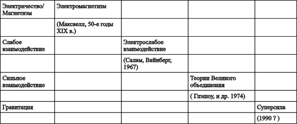

Суперсила. Поиски единой теории природы.
П.Девис
9. Проблески суперсилы
Распад протона
На той неделе, когда ЦЕРН оповестил мир об открытии Z-частицы, Стивен Вайнберг находился на заседании Королевского общества в Лондоне. Он заявил, что весьма пессимистически смотрит на будущее фундаментальной физики. Такой прогноз мог показаться неожиданным. Как может Вайнберг, чья теория как раз на этой неделе получила столь блестящее подтверждение, пессимистически смотреть на развитие физики?
Подобно многим выдающимся физикам-теоретикам, Вайнберг на несколько шагов опередил экспериментаторов. Его интересы уже давно переместились с электрослабой теории на Великое объединение и далее. Пессимизм Вайнберга был вызван не прекрасным положительным результатом, полученным в ЦЕРНе, а получившим меньшую огласку отрицательным результатом, сообщение о котором поступило с озера Эри.
Эксперимент на озере Эри был одним из нескольких экспериментов, повторенных в разных уголках мира, на которые возлагалась наибольшая, а возможно, и единственная надежда проверить ТВО и хотя бы мельком увидеть бледную тень физики в масштабах объединения. Все эти эксперименты преследовали одну цель — обнаружить распад хотя бы одного протона. Сенсационное предсказание ТВО нестабильности протона для большинства физиков явилось чем-то вроде грома среди ясного неба, хотя, как я уже говорил, мысль об этом в течение нескольких лет буквально носилась в воздухе. Долгое время проводились эксперименты по определению пределов времени жизни протонов, но все эти эксперименты были выдержаны в традиционном духе. Никто всерьез не ожидал обнаружить распад протона.
Когда из ТВО выяснилось, что массы, соответствующие объединению, составляют примерно 10^14 масс протона, сразу стало ясно, что физикам никогда не удастся исследовать явления, сопутствующие Великому объединению, в прямых экспериментах. Единственной надеждой была проверка какого-нибудь косвенного эффекта, предсказываемого ТВО, и выбор пал на распад протона. Предсказываемое теорией точное значение среднего времени жизни протона зависит от выбранного варианта ТВО, но в большинстве теорий, в том числе в простейшей из них (известной под названием минимальное SU (5), это время оценивалось примерно в 10^31 лет. Это в 10^21 раз больше возраста нашей Вселенной.
Как можно наблюдать процесс, который длится несравненно дольше возраста доступной наблюдению Вселенной? Но дело в том, что отнюдь не каждый протон живет до своего распада 10^31 лет. Согласно квантовой физике, каждый отдельный распад происходит непредсказуемо. 10^31 лет соответствует среднему времени жизни протона. Это означает, что если собрать 10^31 протонов, то можно быть уверенным, что за год-два один из протонов распадется. Именно из этого исходят при проведении всех экспериментов по распаду протона. Многие тонны вещества размещаются вне зоны влияния космических лучей и подвергаются непрерывному контролю с целью обнаружить внезапный единичный распад протона. Космические лучи — основная помеха в таких исследованиях: они загружают чувствительные приборы всевозможными посторонними частицами. Чтобы избежать этих помех, эксперимент приходится проводить у подножия горы или в глубокой шахте. Но и в этом случае невозможно избавиться от нейтрино.
До ТВО время жизни протона по самым точным оценкам составляло 10^28 лет. Это весьма впечатляющее число, хотя оно относится к событию, которое никогда не происходило. Должно быть, это наиболее достоверный пример события, о котором известно, что оно не произойдет. Что еще заведомо известно из прямого эксперимента о том, что не произойдет по крайней мере 10^28 лет? С появлением ТВО измерения времени жизни протона обрели главный стимул. Для подтверждения ТВО точность эксперимента требовалось повысить по крайней мере в тысячу раз, а это означало необходимость более сложных и дорогих экспериментальных установок.
Перспектива обнаружить распад протона настолько завладела умами физиков, что в исследования включилось несколько групп. Одной из первых была совместная японо-индийская группа, соорудившая глубоко под землей, в одной из шахт в Индии своего рода слоеный пирог из железных плит. Эта на первый взгляд абсолютно безжизненная глыба вещества была окружена детекторами частиц, готовыми зарегистрировать продукты распада протона. Ранней весной 1982 г. появилось первое сообщение. Было зарегистрировано несколько "событий-кандидатов", на основании которых время жизни протона было оценено примерно в 10^31 лет, как предсказывала простейшая версия ТВО.
Известие было встречено с огромным интересом, хотя и с определенной осторожностью. Дело в том, что даже на тон глубине, где проводился эксперимент, распад протона вполне могли имитировать космические лучи и нейтрино. Чтобы подтвердить полученные результаты и вселить уверенность в физиков, требовались другие эксперименты. Через несколько месяцев группа из ЦЕРНа, проводившая эксперимент под Монбланом, также зарегистрировала событие, внешне выглядевшее как распад протона, и интерес к распаду протона стал возрастать. Казалось, мы подошли обнадеживающе близко к порогу новой области в физике.
Большое внимание было уделено последствиям нестабильности протона. Ведь протоны — строительный материал ядерного вещества. Если протонам предстоит распасться, то это означает исчезновение в конце концов и нашей Вселенной. Произойдет это, разумеется не вдруг и не сразу. Но постепенно, на протяжении космических эпох все вещество будет неумолимо улетучиваться. Если оценка 10^31 лет верна, то это означает, что на протяжении жизни человека в его теле с вероятностью, близкой к единице, распадается по крайней мере один протон.
А как обстоит дело с другими составными частями атомов — нейтронами и электронами? Процесс, ведущий к распаду протона, может вызвать и распад нейтронов, хотя многие нейтроны претерпевают более обычный бета-распад. Каждый протон, распадаясь, оставляет свой электрический заряд позитрону — аналогу электрона в антивеществах. Каждый образовавшийся в результате этого позитрон будет искать свою античастицу — электрон и уничтожать его в процессе аннигиляции. Поскольку вначале электронов во Вселенной было ровно столько, сколько протонов, вполне вероятно, что электрон-позитронная аннигиляция в конце концов приведет к полному уничтожению электронов во Вселенной. Таким образом, в конечном итоге 10^40 т вещества в видимой части Вселенной однажды обратятся в прах. Печальная перспектива!
Чтобы быть уверенным в такой перспективе, физикам прежде всего необходимо удостовериться в правильности утверждения о реальности распада протона. По всему миру были проведены более точные эксперименты. Один из самых точных проводился в соляной шахте на глубине 600 м под озером Эри. Использованные в этом эксперименте протоны содержались в 8000 т тщательно очищенной воды, залитой в резервуар, имеющий форму куба с длиной ребра около 18м. В воду были погружены 2000 фотоумножителей. Им предстояло зарегистрировать мгновенные импульсы света, возникающие при движении быстрых заряженных частиц в плотной среде. Замысел состоял в том, что такие короткие вспышки света должны были свидетельствовать о появлении высокоэнергетических продуктов распада протона. Если опенка времени жизни протона 1031 лет верна, то в эксперименте на озере Эри в течение первых трех месяцев работы установки должно быть зарегистрировано несколько таких распадов. В действительности же не удалось наблюдать ни одного распада протона. Складывалось впечатление, что предыдущие сообщения были ошибочными, и надежды на то, что удастся наблюдать распад протона, начали угасать.
Этот отрицательный результат не опроверг ТВО, но, по-видимому, исключил простейшие версии Великого объединения. Существуют более сложные теории, предсказывающие гораздо большее время жизни протона, но и в этом случае маловероятно, что мы когда-нибудь станем свидетелями распада протона; точность экспериментов стремительно приближается к теоретическому пределу.
По мере того как становилось все яснее, что попытки обнаружить распад протона обречены на неудачу, все больше внимания стал привлекать единственно известный экспериментальный способ увидеть хотя бы смутные очертания физики, соответствующей масштабу объединения. Я имею в виду магнитный монополь.
Магнитные монополи
В предыдущих главах мы часто упоминали о легендарной симметрии и красоте уравнений в теории электромагнетизма Максвелла. Однако существует один "недостаток", нарушающий в остальном безупречное изящество теории Максвелла. Электричество и магнетизм представлены в уравнениях Максвелла не равнозначно. Хотя электрическая и магнитная силы тесно взаимосвязаны, они входят в теорию не вполне симметрично. Электрические поля создаются либо электрическими зарядами, либо изменяющимися магнитными полями, в то время как магнитные поля создаются только электрическим током и изменяющимися электрическими полями. Казалось бы, нет веских оснований для того, чтобы магнитные поля не могли создаваться магнитными зарядами (а электрические поля — магнитными токами).
У любого обычного стержневого магнита есть северный и южный полюса, но более глубокий анализ показывает, что магнетизм в действительности обусловлен электрическими токами, циркулирующими в атомах. Так как виток с током эквивалентен паре магнитных полюсов — северному с одной стороны витка и южному — с другой, магнит представляет собой "диполь", т.е. имеет одновременно и северный, и южный полюса. Виток с током не может иметь только один полюс, подобно тому, как монета не может иметь лишь одну сторону. От магнита нельзя отделить один полюс, т.е. создать монополь.
Исследования показывают, что все магниты представляют собой диполи. Магнитные монополи, если они существуют, должны быть крайне неуловимы. Систематическое изучение горных пород, в том числе и лунного грунта и проб, взятых со дна океана, не обнаружило ни одного отдельного магнитного заряда. Многие физики склонны думать, что магнитных монополей не существует. Если это действительно так, то магнетизм — всего лишь вторичный продукт электричества. Принять такую гипотезу это значит признать, что в природе не существует симметрии между электричеством и магнетизмом.
В 1931 г. английский физик-теоретик Поль Дирак обнаружил, что в квантовой физике определенно есть место магнитным монополям, хотя в природе такая возможность не используется. Связав существование магнитных монополей с фазами квантовых волн, Дирак обнаружил весьма любопытную связь между электрическим и магнитным зарядами. Если магнитный монополь действительно существует, утверждал Дирак, то магнитный заряд должен быть кратен некоторой заданной величине, которая в свою очередь определяется фундаментальной величиной электрического заряда. Следовательно, если монополь вдруг заявит о себе, мы по крайней мере знаем, какой величины должен быть магнитный заряд.
Хотя проведенный Дираком анализ выявил место магнитного монополя в физике, из теории Дирака отнюдь не следовало, что магнитные монополи непременно существуют. Почти за полвека на эту тему было написано не так уж много. И вдруг в 1975 г. физики были потрясены сообщением о том, что магнитный монополь обнаружен в космических лучах. Сообщение оказалось ложной тревогой, но послужило стимулом к возрождению интереса к проблеме. Этому немало способствовали новые теоретические идеи, благодаря которым новая концепция монополя оставила далеко позади работу Дирака. По существу теоретики установили, что существование магнитных диполей с той или иной степенью неизбежности вытекает из ТВО.
Монополь Великого объединения (МВО) "придумали" Хоофт и советский физик из Москвы Александр Поляков. В их теоретических работах было показано, что МВО, если они существуют, должны обладать довольно странными свойствами. Прежде всего масса монополя должна несколько превышать массу, характерную для объединения, т.е. составлять почти 10^16 масс протона, иначе говоря, достигать массы амебы. Магнитные монополи не являются точечными частицами. Они должны обладать сложной внутренней структурой луковичного типа, состоящей из силовых зон.
Поскольку о прямом рождении столь массивных частиц не может быть и речи, сторонники концепции магнитного монополя обратились к космологии. А что если МВО образовались вместе с обычным веществом в процессе Большого взрыва и сохранились как реликты до наших дней? Срочно были произведены вычисления, чтобы выяснить, сколько монополей могло сохраниться в таком случае. К великому удивлению теоретиков оказалось, что Вселенная должна буквально кишеть МВО. Согласно одной из оценок, магнитных монополей должно быть не менее чем атомов. Ясно, что в вычислениях что-то не так. Жесткие пределы распространенности монополей вытекают из величины магнитного поля Галактики. В лучшем случае монополи уступают по численности атомам в 10^16 раз.
Теоретики все еще расходятся во мнениях относительно того, что тут делать, и называют эту конфликтную ситуацию проблемой монополя. В гл. 12 мы коснемся некоторых свежих идей, которые, по-видимому, позволяют точно решить проблему монополя. А пока внимание физиков привлекли некоторые возможные следствия того, что распространенность магнитных монополей во Вселенной действительно достигает максимальной величины, допускаемой астрономическими наблюдениями. Как показывают оценки, ежегодно до 200 монополей может попадать на каждый квадратный километр поверхности. Земли из космического пространства. Если бы удалось зарегистрировать хотя бы один из них, то это явилось бы блестящим подтверждением Великого объединения.
Такая перспектива стимулировала ряд попыток обнаружить космические монополи с помощью витков с током. Все эти эксперименты основаны на одном принципе — использовании некоторых материалов, обладающих сверхпроводимостью (при охлаждении до очень низких температур сверхпроводники полностью утрачивают электрическое сопротивление). Сверхпроводимость — по существу квантовый эффект, и одно из важных свойств электрического тока, текущего по сверхпроводящему витку, состоит в том, что магнитное поле этого тока "квантовано", т.е. величина магнитного потока может быть лишь целым кратным некоторой величины. Если через такой виток пролетит магнитный монополь, то величина магнитного потока через виток скачком изменится на несколько квантовых единиц.
14 февраля 1981 г. Блаз Кабрера из Станфордского университета зарегистрировал такой скачок магнитного потока. Наблюдение Кабреры вызвало в некотором роде сенсацию и приветствовалось экспериментаторами как первое убедительное свидетельство обнаружения магнитного монополя из космического пространства. Другие группы поспешили провести свои эксперименты, надеясь подтвердить результат Кабреры, но пока безуспешно. В то время, когда писались эти строки, росло убеждение, что монополь Кабреры также может оказаться ложной тревогой.
Между тем теоретики вплотную занялись вопросом о том, что уже удалось бы наблюдать, если бы на Землю из космического пространства посыпались монополи. Одна из отличительных особенностей МВО — огромная масса, что делает его гигантским хранилищем энергии, в 10^16 раз большей, чем выделяется при расщеплении ядра урана в ядерном реакторе. Для энергоснабжения среднего дома вполне хватило бы нескольких десятков монополей в день.
Чтобы выделилась такая энергия, должна произойти аннигиляция монополя и антимонополя, т.е. северного и южного полюсов. Возникновение каждого северного полюса сопровождается появлением южного полюса, поэтому в среднем на поверхность Земли должно попадать одинаковое количество северных и южных полюсов. Поскольку магнитные монополи, погружаясь в обычное вещество, сохраняют свою стабильность, их в принципе можно было бы накапливать, сортируя северные и южные и запасая в своего рода электромагнитных "сосудах". При необходимости, смешав несколько северных полюсов с равным количеством южных полюсов, можно было бы получить поразительное количество энергии. В крупных масштабах подобное устройство могло бы превратиться в бинарное оружие чудовищной силы.
Некоторые геофизики допускают, что нечто подобное может происходить в естественных условиях в недрах Земли. Падающие на Землю монополи замедляются в земной коре, а попав в ядро Земли, накапливаются там. Геомагнитное поле должно отводить северные полюсы к северу, а южные — к югу, препятствуя их перемешиванию. При обращении геомагнитного поля эти две популяции могут меняться местами, и при миграциях во встречных направлениях происходило бы большое число столкновений северных полюсов с южными, сопровождаемых их аннигиляцией. Высказывалось даже предположение, что этот процесс мог бы в основном объяснить внутреннее тепло Земли.
Поиски распада протона и магнитных монополей отражают угасающие надежды обнаружить хотя бы экспериментально проблески физических явлений, характерных для масштаба объединения. Отказаться от намеченных исследований было бы преждевременно, но многие физики приходят к заключению, что инициатива теперь принадлежит теоретикам. Лишь немногие физики-теоретики считают, что теории великого объединения — последнее слово науки. Но ведь ТВО преуспели в объединении лишь трех из четырех фундаментальных взаимодействий. Какие новые перспективы могут открыться, если появится единая теория в подлинном смысле слова?
Суперсила
Гравитация — это "белая ворона" среди других сил природы. Остальные взаимодействия имеют характер силовых полей, простирающихся в пространстве и времени, гравитация же сама представляет собой пространство и время. Общая теория относительности Эйнштейна описывает гравитацию как деформацию, искривление пространства-времени.' Это не что иное, как пустота, испытывающая возмущение.
Геометрической природе гравитационного поля, по-видимому, присуща необычайная утонченность, но именно она создает серьезные трудности при любой попытке квантового описания. На протяжении десятилетий общая теория относительности Эйнштейна не поддавалась последовательной квантовой формулировке. Несмотря на то что гравитации соответствует калибровочное поле, ее описание на языке обмена гравитонами (частицами — переносчиками гравитационного взаимодействия) дает разумные результаты только в случае простейших процессов. Камнем преткновения, как всегда, служат бесконечные члены, возникающие в уравнениях всякий раз, когда встречаются замкнутые гравитационные петли.
Проблема расходимости гравитационного поля усугубляется тем, что гравитон сам по себе несет гравитационный заряд. В этом отношении он напоминает глюон, который является переносчиком сильного взаимодействия и несет цветовой заряд. Поскольку все формы энергии, включая гравитоны, являются источником гравитации, можно утверждать, что гравитоны "гравитируют". Это означает, что два гравитона могут взаимодействовать, обмениваясь между собой третьим гравитоном, как показано на рис. 21. Можно придумать много сложных диаграмм с обменом гравитонами, и совершенно очевидно, что число замкнутых гравитонных петель (рис. 22) быстро растет по мере того, как включаются процессы, более сложные, чем простой обмен гравитоном.
Появление бесконечной последовательности расходимостей в уравнениях гравитационного поля ныне принято считать неизбежным недостатком квантовой теории гравитации, основанной на теории Эйнштейна. Ситуация здесь напоминает положение дел со слабым взаимодействием до его объединения с электро магнетизмом. Обе теории "неперенормируемы".
Рис. 21. Взаимодействие гравитонов. Гравитация является источником самое себя. На квантовом уровне это приводит к тому, что гравитоны (волнистые линии) могут взаимодействовать друг С другом. В таком процессе два гравитона, обмениваясь третьим, гравитационно взаимодействуют друг с другом.
Рис. 22. Способность гравитонов взаимодействовать между собой делает возможным существование процессов, которым соответствуют сложные сети гравитационных петель. Одна из таких петель изображена на рисунке. Гравитационные петли приводят к возникновению в математическом описании квантовой гравитации некомпенсируемых бесконечных членов и по существу делают теорию беспомощной.
В случае слабого взаимодействия причина была в симметрии: старая теория испытывала недостаток симметрии. Но стоило ввести в нее мощную калибровочную симметрию, как все расходимости, словно по мановению волшебной палочки, исчезли. Теоретики извлекли из этого хороший урок, и лет десять назад принялись за поиски новой симметрии, более широкой, чем ранее известные, которая избавила бы гравитацию от неперенормируемости. Так физики пришли к идее суперсимметрии.
Суть суперсимметрии связана с понятием спина в том виде, в каком оно используется в физике элементарных частиц. Когда говорят о частице со спином, имеют в виду не просто представление о крохотном шарике, вращающемся вокруг собственной оси. Кое-что о необыкновенных свойствах спина было рассказано в гл. 2. У частицы со спином происходит своего рода "раздвоение мира", не соответствующее геометрической интуиции.
Существование спина имеет решающее значение для свойств частиц — в зависимости от спина частицы разделяются на два класса. К одному классу относятся "бозоны" — частицы, которые либо вообще не имеют спина (т.е. их спин равен 0), как, например, гипотетическая частица Хиггса, либо имеют целочисленный спин. К последним наряду с фотоном относятся W- и Z-частицы (все они имеют спин 1) и гравитон (имеющий спин 2). В том, что касается спина, поведение бозонов близко к нашим интуитивным представлениям.
Другой класс частиц образуют "фермионы". Они имеют полуцелый спин. Все кварки и лептоны имеют спин, равный 1/2, и относятся к фермионам. Именно спином фермионов обусловлена необходимость двукратного поворота для возвращения в исходное состояние, и это бросает вызов нашему воображению.
Бозоны и фермионы существенно отличаются по своим физическим свойствам. Особенно сильно это различие проявляется в ансамблях частиц. Фермионы с полуцелым спином, как у электрона, страдают своего рода "ксенофобией", не подпуская близко к себе своих двойников. В период младенчества квантовой физики Паули сформулировал свой знаменитый "принцип запрета", согласно которому два электрона не могут находиться в одном и том же квантовом состоянии. Это означает, что в контейнер заданных размеров можно поместить конечное число электронов, прежде чем возникнет своеобразный "протест". (Этот эффект не имеет ничего общего с электрическим отталкиванием. Нейтрино и нейтроны ведут себя столь же "несговорчиво".) Принцип Паули сыграл большую роль еще на заре квантовой физики, так как позволил объяснить, почему все электроны в тяжелых атомах не переходят в состояние с наименьшей энергией, образуя хаотическое скопление. Вместо этого они в строгом порядке заполняют один за другим энергетические уровни. Без подобного порядка химия оказалась бы совершенно бесполезным занятием. Принцип Паули позволяет объяснить периодическую систему химических элементов Д. И. Менделеева.
Принцип Паули дает возможность объяснить и многое другое в окружающем нас мире, например различие между проводниками и изоляторами. В проводнике некоторые электроны, приобретая энергию от внешнего электрического поля, могут переходить на более высокие энергетические уровни. В изоляторе этого не происходит, так как все более высокие уровни заняты другими электронами. Принцип Паули помог объяснить также природу силы, препятствующей гравитационному коллапсу белых карликов и нейтронных звезд. Не будь принципа Паули, все звезды заканчивали бы свое существование как черные дыры.
В отличие от склонных к уединению фермионов бозоны стремятся быть вместе. Принцип запрета не распространяется на них, и поэтому большие ансамбли бозонов отличаются по своему поведению от "кузенов"- фермионов. Бозоны готовы тесниться и ютиться в одном и том же состоянии. Из-за подобной склонности к сотрудничеству бозоны выступают одной дружной командой, объединяя, а не парализуя усилия друг друга. Большое количество бозонов может действовать слаженно, вызывать макроскопические эффекты, которые можно непосредственно наблюдать. Например, множество фотонов, движущихся согласованно, может приводить к вполне определенным электромагнитным явлениям, например, таким, как радиоволны. Фермионы не способны на нечто подобное, так как они мешают друг другу. Именно поэтому мы никогда не наблюдаем макроскопических электронных волн, хотя каждому электрону соответствует своя волна.
Принципиальные различия в физических свойствах фермионов и бозонов приучили физиков десятилетиями хранить информацию о них в разных участках мозга. В частности, все переносчики взаимодействия — бозоны, тогда как кварки и лептоны — фермионы. Это означает, что бозоны принято ассоциировать с взаимодействием, а фермионы с веществом. Столь резкое различие между ними, вероятно, объясняет, почему у многих физиков вызвала недоумение предложенная в начале 70-х годов суперсимметрия, объединяющая бозоны и фермионы в рамках одной теории. Такое объединение напоминает вынужденный брак — столь различны по своим свойствам эти две группы частиц; тем не менее оно возможно, если обратиться к симметрии, более широкой, нежели симметрия Лоренца — Пуанкаре, лежащая в основе теории относительности. Математически суперсимметрия соответствует извлечению квадратного корня из симметрии Лоренца — Пуанкаре. Физически же она соответствует превращению фермиона в бозон и наоборот. Разумеется, в реальном мире невозможно проделать такую операцию, как невозможно, вращая "волшебную ручку", изменять индивидуальность электрона в случае калибровочных симметрий, рассмотренных в предыдущих главах. Тем не менее операцию суперсимметрии можно сформулировать математически и можно построить теории, включающие суперсимметрию.
Вскоре "супертеоретики" сосредоточили внимание на гравитации. Суперсимметрия тесно связана с геометрией: если произвести одну за другой две суперсимметричные операции, то получится простая геометрическая операция, вроде пространственного сдвига. Математический аппарат суперсимметрии получил название квадратного корня из геометрии. Гравитацию, представляющую собой в чистом виде геометрию искривленного пространства, можно естественным образом выразить на языке суперсимметрии, что позволяет более ярко продемонстрировать калибровочно-полевую природу.
Объединяя бозоны и фермионы, еуперсимметрия сводит в одно семейство частицы с различными спинами. Набор частиц, одни из которых имеют спин, равный 0, другие — 1/2, 1 и т.д., можно составить так, что семейство в целом будет суперсимметричным. Следовательно, если мы требуем, чтобы теория гравитации была суперсимметричной, то гравитон со спином 2 не сможет существовать отдельно. Он должен принадлежать целому семейству частиц, связанных со спином 2 операцией суперсимметрии. К числу таких частиц относятся частицы со спином 0, 1/2, 1 и, что особенно важно, 3/2. Элементарные частицы со спином 3/2 неизвестны (хотя комбинация из трех кварков может иметь суммарный спин 3/2), поэтому предсказание такой частицы — одна из неизведанных особенностей суперсимметрии.
Описание гравитации на языке суперсимметрии получило название супергравитации. От обычной гравитации супергравитация отличается тем, что гравитон здесь уже не единственный переносчик гравитационного взаимодействия. В качестве переносчиков выступает целое суперсимметричное семейство, в том числе загадочные частицы со спином 3/2 , которые физики назвали "гравитино".
Детальная структура этого семейства зависит от математического представления суперсимметрии, которому теоретик отдаёт предпочтение. Самое плодотворное представление называется супергравитацией N = 8. В нем рассматривается семейство частиц внушительных размеров: 70 частиц со спином О, 56 — со спином 1/2; 28 — со спином 1 и 8 — со спином 3/2 , а также единственный гравитон со спином 2. Возникает любопытный вопрос: можно ли отождествить все эти частицы с известными в природе, т.е. с кварками, лептонами и переносчиками взаимодействий? Если можно, то мы располагаем единой теорией природы, которая не только включает все частицы вещества в одно суперсемейство, но и "обобществляет" всех переносчиков взаимодействий, тем самым объединяя все взаимодействия. Таким образом, супергравитация создает основу для полного объединения, в рамках которого весь мир управляется единственной верховной суперсилой — суперсилой, предстающей перед нами различными гранями: то как электромагнитное взаимодействие, переносимое фотонами, то как сильное взаимодействие, переносимое глюонами, и т.д., но все эти грани связаны между собой суперсимметрией (см. табл. 5).
В действительности супергравитация выходит и за такие рамки. Она дает единое описание взаимодействия и вещества. В основе как взаимодействия, так и вещества лежат квантовые частицы, причем фотоны, W- и Z-частицы, а также глюоны относятся к бозонам, тогда как кварки и лептоны — относятся к фермионам. В суперсимметрии все они объединены. Подобно тому как гравитон сопровождается гравитино, переносчики других фундаментальных взаимодействий сопровождаются новыми частицами, получившими названия фотино, вино, зино и глюино!
Существование всех этих "ино" решающим образом сказывается на математической формулировке теории, в особенности на доставляющем столько беспокойства вопросе о перенормируемости. Грубо говоря, "ино", относящиеся к фермионам, порождают в теории расходимости противоположного знака по сравнению с расходимостями, обусловленными бозонами, например гравитонами. Таким образом, имеется тенденция к взаимному уничтожению бесконечных членов — отрицательные бесконечности от гравитинных петель компенсируются положительными бес конечностями от гравитонных петель. По существу бесконечности "насмерть" суперсимметризуют друг друга.
Таблица 5

Последовательное объединение фундаментальных взаимодействий началось с синтеза электричества и магнетизма в рамках теории Максвелла в XIX в. Объединение слабого и электромагнитного взаимодействий получило надежное подтверждение в 1983 г. благодаря открытию W- и Z-частиц. Данных, подтверждающих Великое объединение, пока нет, но их с нетерпением ожидают. Число теоретических предпосылок для создания теории суперобъединения всех фундаментальных взаимодействий в рамках единой суперсилы, быстро растет.
С первых шагов супергравитации возник единственный острый вопрос: окажется ли суперсимметрия достаточно широкой, чтобы обеспечить перенормируемость супергравитации? Ответить на этот вопрос было нелегко. Супергравитация открывает широкое поле деятельности, привлекающее внимание десятков теоретиков, ежегодно по супергравитации публикуются сотни статей. Ее математический аппарат стал настолько сложным, что за исключением узкого круга посвященных найдется немного людей, которые понимают значение того или иного символа. В моем отделе работает один специалист по супергравитации, и обычно даже неполный расчет занимает у него стопку бумаги толщиной 10 см. Ведь как ни просты и ни изящны математические основы теории, проверка деталей может оказаться достаточно кропотливой.
Из-за сложности и громоздкости вычислений пока еще не удалось ответить на вопрос о перенормируемости супергравитации, но и то, что сумели установить теоретики, выглядит весьма ободряюще. По-видимому, супергравитация не просто позволит достичь перенормируемости, при которой расходимости в теории сохраняются, но их удается обойти с помощью того или иного математического приема. В супергравитации, очевидно, делается попытка получить конечные результаты. По крайней мере во всех выполненных до сих пор вычислениях окончательные результаты неизменно оказывались конечными. Существует твердое убеждение, что в супергравитации удалось, наконец, искоренить расходимости, от которых теория поля страдала на протяжении по крайней мере двух поколений ученых.
Супергравитация — это последнее достижение, венчающее долгий поиск единства в физике. И хотя она пребывает еще в стадии формирования, ее успехи сулят надежду на решение трех главных проблем теоретической физики: как объединить все четыре фундаментальных взаимодействия в единственной суперсиле; как объяснить существование -всех фундаментальных частиц (они необходимы для поддержания суперсимметрии); почему гравитация гораздо слабее остальных фундаментальных взаимодействий?
Уверенность в благополучном исходе исследований в некоторых кругах ученых настолько сильна, что Стивен Хокинг видит в супергравитации N = 8 кульминацию теоретической физики. Действительно, эта теория в принципе способна дать объяснение всему, с чем имеет дело физика, — всем взаимодействиям и всем частицам. Если Хокинг прав (хотя, возможно, еще не пришло время физикам-теоретикам переквалифицироваться, скажем, в биохимики), то супергравитация принципиально отличается от прочих физических теорий. До сих пор физические теории. рассматривались лишь как модели, которые приближенно описывают реальность. По мере усовершенствования моделей согласие теории с реальностью улучшалось. Некоторые физики теперь утверждают, что супергравитация и есть сама реальность, что эта модель идеально согласуется с реальным миром. Возможно, слишком амбициозное утверждение, но по нему можно судить об эйфории, порожденной последними достижениями.
Крайне неясные перспективы экспериментальной проверки Многих новых идей противостоят энтузиазму теоретиков. На заседании Лондонского Королевского общества Вайнберг подчеркнул безысходность сложившейся ситуации. "Квантовая гравитация, по-видимому, недоступна любой экспериментальной проверке, которую мы способны придумать, — заявил он. — Физика в основном вступает в такую эру, когда эксперименты уже не в состоянии пролить свет на фундаментальные проблемы. Положение очень тревожно". Я спросил у Вайнберга, не означает ли это, что физика становится чисто умозрительной. "Не думаю, — ответил он. — Я надеюсь, что острый ум экспериментаторов найдет какой-то выход". Но он признался, что даже не представляет, каким мог бы быть выход.
В то время, когда я писал эту книгу, разработка единой теории существенно продвинулась вперед, и смутно обозначились контуры полной теории, хотя до ее экспериментальной проверки все еще очень далеко. Подобно многим заманчивым образам единая теория может оказаться миражом, но впервые за всю историю науки у нас складывается представление о том, как будет выглядеть законченная научная теория всего сущего.